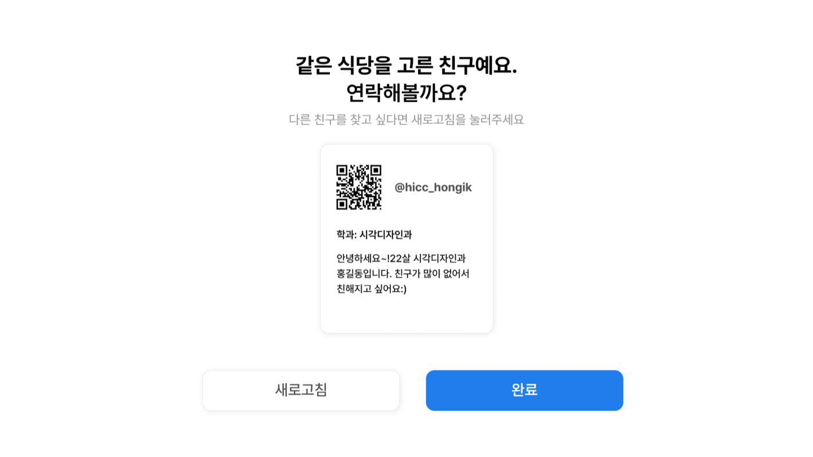
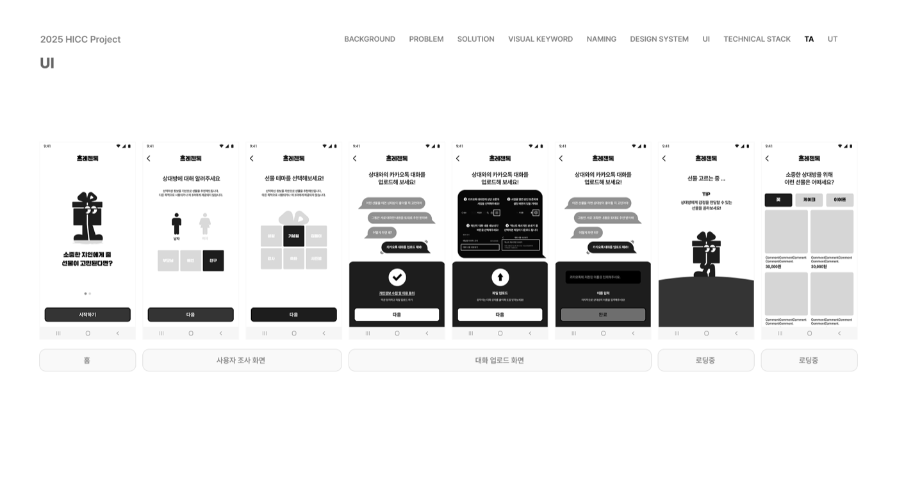
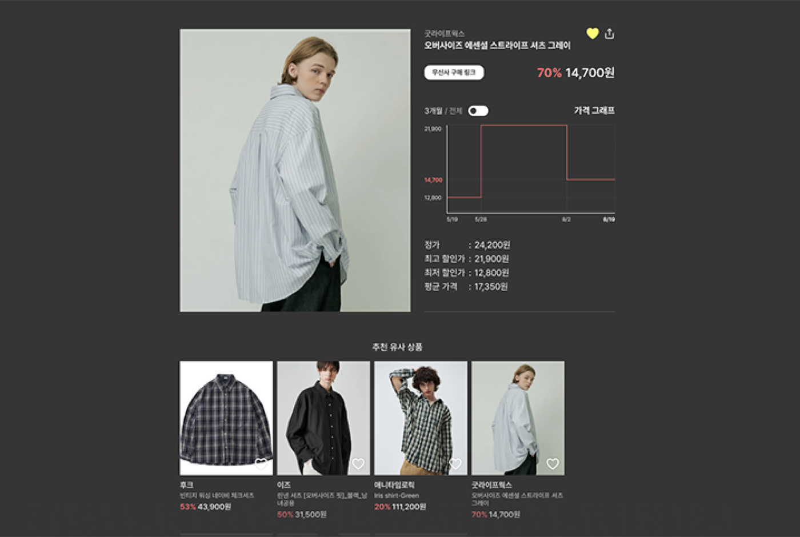

Selected engineering work
Projects
결과만 나열하지 않고 문제, 직접 맡은 범위, 확인한 결과,
아직 해결하지 않은 경계를 함께 적었습니다.
6 selected projects · 3 contributions & POCs
 기업용 포인트 기반 복지·리워드 SaaS
기업용 포인트 기반 복지·리워드 SaaS
01 · Founder / Full-stack
JoyCrew
기획부터 백엔드 핵심 기능, AWS EKS 배포와 모니터링까지 주도한 B2B SaaS입니다.
실제 기업 환경의 베타 테스트를 통해 멀티테넌트 경계와 운영 흐름을 확인했습니다.
- Problem
- 기업별 사용자, 포인트, 관리자 권한과 데이터 접근 범위를 분리해야 했습니다.
- Implemented
- 포인트·결제 백엔드, Host 기반 tenant 식별, companyId 접근 조건, EKS 배포·모니터링 구조를 구현했습니다.
- Validated
- 실제 기업 베타 테스트에서 고객사별 사용자와 포인트 데이터를 분리해 운영했습니다.
- Boundary
- 장기 대규모 트래픽과 다수 고객사 확장성은 아직 검증 범위가 아닙니다.
Java 17Spring BootEKSRDSMulti-TenantPessimistic Lock
Backend repository ↗
 평가, fallback, serving과 관측을 연결한 RAG 시스템
평가, fallback, serving과 관측을 연결한 RAG 시스템
02 · AI systems
CloudOps RAG
AWS와 Kubernetes 공식 troubleshooting 문서를 대상으로, 답을 생성하는 데모를
검색과 답변 품질을 따로 평가할 수 있는 서비스로 확장했습니다.
- Problem
- 자연스러운 답변만으로는 retrieval이 맞았는지, 근거가 충분한지 판단하기 어려웠습니다.
- Implemented
- Hit@k·MRR, answer evaluation, threshold fallback, failure taxonomy, FastAPI, Prometheus, CI regression gate를 구현했습니다.
- Measured
- 작은 held-out set에서 Hit@3 8/8, MRR 0.9375를 확인했습니다.
- Boundary
- 평가 표본이 작고 대규모 부하 테스트, circuit breaker, 비동기 ingestion은 구현하지 않았습니다.
PythonFastAPIOpenAI APIChromaPrometheusCI
Case study →

동아리 박람회 현장에서 운영한 추천·매칭 서비스
03 · Backend
Hongik Taste Navigator
동아리 박람회 방문객에게 식당을 추천하고 식사 메이트를 연결한 서비스입니다.
- Problem
- 역 이름 기반 검색에서 외부 API 결과가 실제 거리 순서와 일치하지 않는 경우가 있었습니다.
- Implemented
- Naver Local API 결과를 좌표 기반 거리로 다시 계산해 정렬했습니다.
- Observed
- 이틀간 약 1,000명의 실사용자가 서비스를 이용했습니다.
Java 21Spring BootMySQLAWS EC2Naver Local API
Repository ↗

대화 로그 기반 선물 추천 서비스
04 · Backend / AI integration
PresenTalk
카카오톡 대화 로그에서 취향 단서를 추출해 선물을 추천하는 AI 기반 서비스입니다.
- Implemented
- 쿠팡 파트너스 API의 HMAC-SHA256 인증 헤더와 sliding-window rate limiter를 구현했습니다.
- Constraint
- 외부 API 인증 규약과 호출 제한을 애플리케이션 경계에서 통제했습니다.
Spring BootOpenAI APISeleniumExternal APIRate Limiting
Repository ↗

상품 수집과 가격 변동 추적 플랫폼
05 · Backend / Data collection
MusinsaObserver
패션 상품 데이터를 주기적으로 수집하고 가격 변동을 추적하는 백엔드 시스템입니다.
- Problem
- Jsoup 기반 HTML 파싱이 순차 실행되며 전체 수집 시간을 지배했습니다.
- Implemented
- ExecutorService와 FixedThreadPool로 수집 작업의 동시 실행 범위를 제한했습니다.
- Measured
- 동일한 수집 흐름의 처리 속도를 약 3배 개선했습니다.
Java 21Spring BootExecutorServiceDockerGitHub Actions
Repository ↗
 노이즈와 edge 제약을 고려한 Video Anomaly Detection 연구
노이즈와 edge 제약을 고려한 Video Anomaly Detection 연구
06 · ML systems research
Noise-Robust VAD
실제 감시 환경의 노이즈와 Jetson Nano 실행 제약을 함께 고려한 VAD 연구입니다.
- Implemented
- MSTF 기반 시간 축 집계와 matched filter 후처리를 적용했습니다.
- Measured
- AUROC를 60.05%에서 72.49%로 개선했습니다.
- Analyzed
- Jetson Nano에서 TensorRT·ONNX 최적화가 필요한 추론 병목을 분리했습니다.
PythonPyTorchOpenCVTensorRTJetson Nano
Additional work
기여와 해커톤 POC
완성 제품과 동일하게 포장하지 않고, 참여 형태와 결과를 그대로 표시합니다.
Collaboration
SeeATheater
중도 합류 후 기존 서비스의 frontend와 backend 양쪽 기능 구현 및 연동에 참여했습니다.
Hackathon POC · Award
DigiLab Challenge
제한 시간 안에 핵심 사용자 흐름을 구현한 POC로, 제주지역혁신플랫폼(RIS) 지능형서비스사업단 최우수상을 수상했습니다.
Organization ↗
Hackathon POC · Award
MOONG Connecton
아이디어의 핵심 흐름을 POC까지 구현해 한국청년기업가정신재단상을 수상했습니다.
Organization ↗